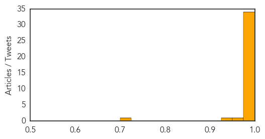

Ebola
30-Day Web Trend
15 alerts, 10 warnings

30-Day Twitter Trend
8 alerts, 0 warnings

Article Locations

Article Confidences
Top Articles:
- 1.000
- West Africa Ebola toll tops 600: WHO
- 1.000
- Ebola Update: Largest Outbreak on Record Causes 603 Deaths
- 1.000
- West Africa Ebola toll hits 603
- 1.000
- Ebola Survivor Shunned as a Zombie Joins Fight Against Virus
- 1.000
- Ebola 2014: Death toll, new cases on the rise in Africa
- 1.000
- Prayer List: 603 People Killed by Ebola Virus
- 1.000
- Defying the Ebola Odds in Sierra Leone « Awoko Newspaper
- 1.000
- Death Toll in West Africa Rises From World's Worst-Ever Ebola Outbreak
- 0.999
- USAMRIID provides on-site laboratory support to current Ebola outbreak
- 0.999
- Ebola Virus Death Toll Up to 603; Ivory Coast Closes Border to Refugees
- 0.999
- No Quick End in Sight for Ebola Epidemic in West Africa
- 0.999
- Liberia's suspected Ebola death toll rises to 94
- 0.998
- Ebola stalks West Africa
- 0.998
- The Vectors
- 0.996
- Fighting Ebola "by the grace of God"
- 0.995
- Ebola Outbreak Requires Urgent Deliveries of Medicines and Protective Gear
- 0.994
- West African Ebola Outbreak Shows Difficulty of Coordinating Effective Response
- 0.994
- West African Ebola Outbreak Shows Difficulty of Coordinating Effective Response
- 0.994
- WHO to establish a Sub-Regional Ebola Control Centre in Guinea
- 0.994
- UNICEF-Liberia Ebola Virus Disease: SitRep #37, 16 July 2014 - Liberia
- 0.993
- Ebola Continues to Torment Western Africa, Death Toll Now Over 600
- 0.980
- Ex-teacher charged with trying to pay for teen sex
- 0.980
- Hogan: Eliminate income tax on military pensions
- 0.980
- Md. works to find shelter for immigrant children
- 0.980
- Schematic design for Catonsville Elementary unveiled at community meeting
- 0.980
- Traffic: Collision on I-95 South in Baltimore City
- 0.980
- Man shot and injured in Catonsville
- 0.980
- After quiet week, 3 killed in Baltimore
- 0.980
- Safety concerns spur new rules for water jet packs in Md.
- 0.980
- Md. panel discusses pretrial reforms
- 0.980
- O'Malley raises $796K in second quarter
- 0.980
- Three drowned in Maryland waters, search underway for fourth
- 0.980
- New group in early discussions with Westport developer
- 0.980
- Rose: Loophole undercuts privacy rights
- 0.967
- No School, No Handshakes: Reporting On Ebola From Sierra Leone
- 0.930
- Ebola kills at least four in Liberia's capital
- 0.721
- Nurses Association in Los Angeles Donate Le21m to Fight Ebola in Sierra Leone
Top Tweets:
-
No tweets found for Jul 16, 2014
Hepatitis
30-Day Web Trend
0 alerts, 0 warnings

30-Day Twitter Trend
0 alerts, 0 warnings

Article Locations

Article Confidences

Top Articles:
- 0.947
- Hepatitis E on the rise in S. Sudan’s Lakes state - South Sudan
- 0.932
- Hepatitis E on the rise in S. Sudan's Lakes state
- 0.656
- Almost 7 million need aid in Sudan
- 0.654
- Where did HIV come from? Is it a Man-made virus?
- 0.648
- Seven million people need aid in #Sudan
- 0.625
- 10 Things Your Doctor Won't Tell You About Your Blood Tests
- 0.603
- Lacking awareness: Used syringes lead to rise in hepatitis cases in Malir goth
- 0.588
- Kulgam inhabitants struggle for essential services
- 0.565
- Monsoon showers diseases on rag pickers
- 0.508
- Marinscope Community Newspapers : Opinion
- 0.502
- Humanitarian Needs Reach US$982 million « African Press International (API)
Top Tweets:
-
No tweets found for Jul 16, 2014